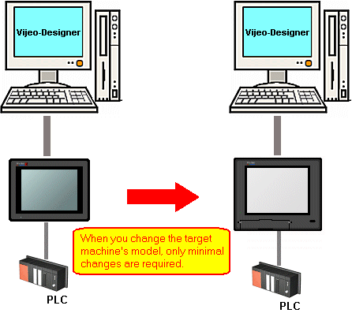
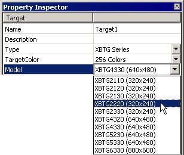

|
|
|
|
|
|
|
|
Because Vijeo-Designer supports multi-platform development, you can change your target without restrictions—even after project development is complete.

In the Navigator window's Project tab, select the target you want to change.
In the Property Inspector, select the target Type or Model to complete the transformation. The Target Model Change dialog box opens verifying the change request. Press OK.
You can now download the project to the defined target machine.


If changing the Type and Model properties reduce the panel dimensions, you may find all or some of the panel objects positioned outside the panel. In this case, move the affected objects over so they fit in the panel.
If you change the Type and Model properties and the specified font is not available for the defined target type, the text will display using the closest matching font.
If you change the Type and Model properties, be aware that the different hardware on each target machine limits the features that are available. After changing the Type or Model, confirm all associated settings.
Changing the Target Type could reset any target property.
When you change a target's type, model, or resolution (for iPC Smart BOX), the Target Model Change dialog box opens prompting you to verify the change request.
To automatically scale panel objects in your project to fit into the new screen dimensions, select Automatically resize Panel Contents, Popup Windows, and Font Resources check box and click OK.
This feature works on Base Panels, Master Panels, Popup Windows, fonts, and font resources.

To scale the location of Popup Windows, in the Popup Windows Action settings, select Centered.
The Automatically resize Panel Contents, Popup Windows, and Font Resources check box is grayed out, if you change your target to one with same or smaller screen size or resolution.
The font size of Toolchest Parts does not scale.
Some fixed-size Toolchest Parts do not scale (example, LoginSmall01).